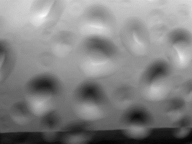
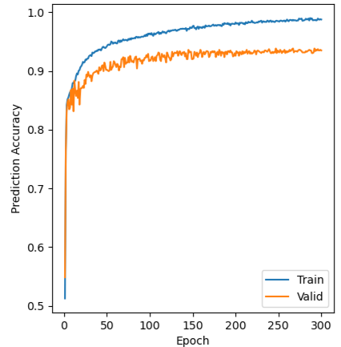
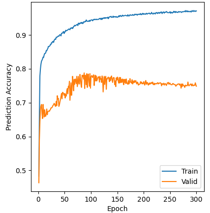

PiCam UV camera at El Reventador, Ecuador (Dr Thomas Wilkes, University of Sheffield)
UV camera 310nm image
After conversion to SO2 optical depth
Exploring use of computer vision techniques to enable automated measurement of volcanic sulphur dioxide flux, and provide informed estimates of the uncertainty.
Project Background:
Since the early 2000s, UV camera technology for measurement of volcanic sulphur dioxide emission rates has developed, allowing for an increasing number permanent installations.
The Volcanology group at The University of Sheffield have designed low-cost PiCam units, with a variety of installations across the globe.
Collectively these cameras return vast amounts of data, which is very time consuming to process manually.
Multiple groups have developed techniques for automating some or all processing steps for these large batches of data (CITATIONS HERE).
In this project we aim to develop reliable techniques for understanding data quality, making the most of computer vision to inform processing decisions and enable improved uncertainty quantification.
Techniques are explored an tested on data from six volcanoes around the globe, with the intention of selecting methods which generalise well to new locations or camera installations.
First step: Data Quality Asessment
Ideally, all retrieved data would look like the example above: well lit with a a clear background sky, defined plume and nothing obscuring the recording.
However, this isn't always the case...
Cloud can cover the volcano flank, obscuring the plume.

Rain, ash or snow regularly affect the data at some locations.
Sometimes wildlife even gets in the way!
Current Progress:
We've been exploring the use of convolutional neural networks to identify two of the cases illustrated above: an obscured camera lens, and cloud interacting with or obstructing the view of the plume.
Networks pre-trained on the ImageNet dataset are fine-tuned using manually classified samples, to output a "lens-obscurance" index and "cloud obscurance" index.
Models are being evaluated for ability to generalise to data from unseen volcano locations, and prediction accuracy on new data from volcanoes seen in training.

Accuracy of a model-in-develpoment classifying on-lens obscurance, increasing as the model is trained.

Accuracy of a model-in-development for classifying cloud interacting with plume.
The training process for baseline versions of these models is illustrated above. The prediction accuracy on the validation set increases with training epochs until the model has learned all the helpful information it can from the given data, at which point the accuracy levels off or decreases. We hope to improve these results futher through hyperparameter tuning, and expansion of the labelled dataset (described below). Currently predictions are generally strong on the most and least obscured data, but there is more error near the decision boundary. The results vary at different volcanoes too, as shown below.
The predictions of the cloud index on data from Kīlauea are really bad! Cloud often slightly mixes with the plume, and doesn't lie over the flank so this data looks significantly different to other locations.
However at other locations, in this case Merapi, the accuracy is very strong. In particular, all of the manually labelled "Very" and "In Calc" (affecting the area where absorbance is calculated) data is identified strongly by the index.
We found that the main limitation on the performance of the models in many cases was the labelled training dataset given.
However, manually labelling the terabytes of data available is not possible, and would make model training impractical as the dataset size increased.
Therefore we are testing the use of a procedure to select key informative samples to assign manual labels to:
the features which the models use to describe given data in thier intermediate laters were calculated for a pool of potential new data to be labelled,
these features were clustered. Samples were selected from clusters which had low proportion of their data labelled already, high inconsistency in true labels,
and with preference to samples where the model-prediction disagreed with the majority class in that cluster. Adding these new samples increased the training set
size by just over 10%, and initial tests have found that training with this additional data significantly improves the predictions.
A 2D representation of the feature space, showing the location of unlabelled samples from the dataset as a whole, the original labelled dataset, and the additional data selected for labelling.
Future Work:
Next planned steps include experimentation with automation of further processing steps (e.g. plume segmentation for background light estimation), and uncertainty quantification.
This area of work has potential for use with other UV volcano camera systems, aswell as wider application e.g. to visible wavelength volcano camera data.
Contact/About
Hi! I’m Alyssa, a PhD student at the University of Sheffield where I’m supervised by members of the Volcanology and Computer Vision Research Groups:
Dr Thomas Wilkes (Primary), Dr Tom Pering and Dr Jefersson dos Santos
I began working on this project in 2024, after studying maths in Edinburgh where I worked on algorithms for fair division of cakes!
Applications of computer science and maths especially interest me and I hope to contribute a useful tool for volcano monitoring with this project.